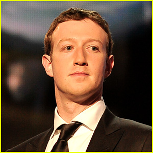

← Back to home
Mark Zuckerberg

- Co-founder, executive chairman and
CEO of Meta Platforms
M ark Elliot Zuckerberg (/ˈz ʌkərbɜːrɡ/; born May 14, 1984) is an American business magnate, internet entrepreneur, and philanthropist. He is known for co-founding the social media website Facebook and its parent company Meta Platforms (formerly Facebook, Inc.), of which he is the executive chairman, chief executive officer, and controlling shareholder.[1][2]
Zuckerberg attended Harvard University, where he launched Facebook in February 2004 with his roommates Eduardo Saverin, Andrew McCollum, Dustin Moskovitz, and Chris Hughes. Originally launched to select college campuses, the site expanded rapidly and eventually beyond colleges, reaching one billion users in 2012. Zuckerberg took the company public in May 2012 with majority shares. In 2007, at age 23, he became the world's youngest self-made billionaire. He has used his funds to organize multiple philanthropic endeavors, including the establishment of the Chan Zuckerberg Initiative.
Zuckerberg has been listed as one of the most influential people in the world on four occasions in 2008, 2011, 2016 and 2019 respectively and nominated as a finalist in 2009, 2012, 2014, 2015, 2017, 2018, 2020, 2021 and 2022. He was named the Person of the Year by Time magazine in 2010, the same year when Facebook eclipsed more than half a billion users.[3][4][5] In December 2016, Zuckerberg was ranked tenth on Forbes list of The World's Most Powerful People.[6] In the Forbes 400 list of wealthiest Americans in 2022, he was ranked 11th with a wealth of $57.7 billion, down from his status as the third richest American in 2021 with a net worth of $134.5 billion. As of May 2023, Zuckerberg's net worth was estimated at $85.0 billion according to the Forbes Real Time Billionaires making him the 14th richest person in the world.[7] A film depicting Zuckerberg's early career, legal troubles and initial success with the site, The Social Network, was released in 2010 and won multiple Academy Awards.
Zuckerberg's prominence and fast rise in the technology industry has prompted political and legal attention. The founding of Facebook involved Zuckerberg in multiple lawsuits regarding the creation and ownership of the website as well as issues of user privacy. In 2013, he co-founded the pro-immigration lobbying group FWD.us. On April 10 and 11, 2018, Zuckerberg testified before the United States Senate Committee on Commerce, Science, and Transportation regarding the usage of personal data by Facebook in relation to the Facebook–Cambridge Analytica data breach.[8]
Early life and education
Mark Elliot Zuckerberg was born on on May 14, 1984, in White Plains, New York[9] to psychiatrist Karen (née Kempner) and dentist Edward Zuckerberg.[10] He and his three sisters (Arielle, Randi, and Donna) were raised in a Reform Jewish household[11][12] in Dobbs Ferry, New York.[13] His great-grandparents were Jewish emigrants from Austria, Germany, and Poland.[14] He attended high school at Ardsley High School before transferring to Phillips Exeter Academy. He was the captain of the fencing team.
Software development
Early years
Zuckerberg began using computers and writing software in middle school. In high school, he built a program that allowed all the computers between his house and his father's dental office to communicate with each other.[18][19] During Zuckerberg's high-school years, he worked to build a music player called the Synapse Media Player. The device used machine learning to learn the user's listening habits, which was posted to Slashdot[20] and received a rating of 3 out of 5 from PC Magazine.[21] A New Yorker profile said of Zuckerberg: "some kids played computer games. Mark created them."[13]
College years
The New Yorker noted that by the time Zuckerberg began classes at Harvard in 2002, he had already achieved a "reputation as a programming prodigy". He studied psychology and computer science and belonged to Alpha Epsilon Pi and Kirkland House.[4][13][22] In his sophomore year, he wrote a program that he called CourseMatch, which allowed users to make class selection decisions based on the choices of other students and also to help them form study groups. A short time later, he created a different program he initially called Facemash that let students select the best-looking person from a choice of photos. Arie Hasit, Zuckerberg's roommate at the time, explained:
We had books called Face Books, which included the names and pictures of everyone who lived in the student dorms. At first, he built a site and placed two pictures or pictures of two males and two females. Visitors to the site had to choose who was "hotter" and according to the votes there would be a ranking.[23]
Career

Facebook
In January 2004, Zuckerberg began writing code for a new website.[25] On February 4, 2004, Zuckerberg launched "Thefacebook", originally located at thefacebook.com, in partnership with his roommates Eduardo Saverin, Andrew McCollum, Dustin Moskovitz, and Chris Hughes.[26][27][28] An earlier inspiration for Facebook may have come from Phillips Exeter Academy, the prep school from which Zuckerberg graduated in 2002. It published its own student directory, "The Photo Address Book", which students referred to as "The Facebook". Such photo directories were an important part of the student social experience at many private schools. With them, students were able to list attributes such as their class years, their friends, and their telephone numbers.[27]
Six days after the site launched, three Harvard seniors, Cameron Winklevoss, Tyler Winklevoss, and Divya Narendra, accused Zuckerberg of intentionally misleading them into believing he would help them build a social network called HarvardConnection.com, while he was instead using their ideas to build a competing product.[29] The three complained to The Harvard Crimson, and the newspaper began an investigation in response. While Zuckerberg tried to convince the editors not to run the story,[30] he also broke into two of the editors' email accounts --- for which he made use of their private login data logs from TheFacebook.[31][32]
Following the official launch of the Facebook social media platform, the three filed a lawsuit against Zuckerberg that resulted in a settlement.[33] The agreed settlement was for 1.2 million Facebook shares and $20 million in cash.[34]
Zuckerberg's Facebook started off as just a "Harvard thing" until he decided to spread it to other schools, enlisting the help of roommate Dustin Moskovitz.[35] They began with Columbia, New York University, Stanford, Dartmouth, Cornell, University of Pennsylvania, Brown, and Yale.[36]
Copyright © 2023 - sai akhilesh üòÖ